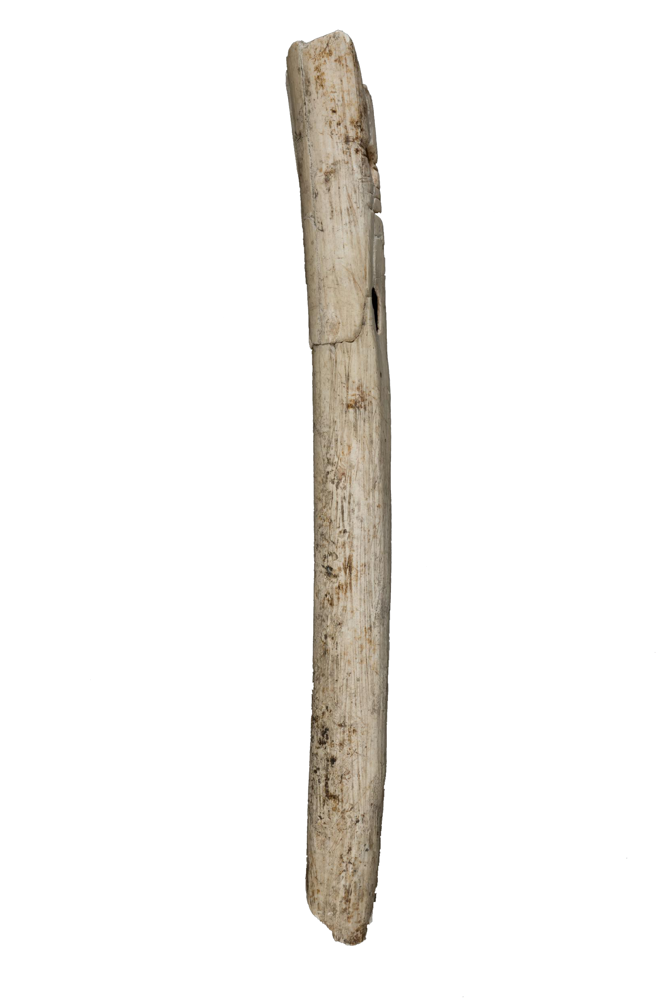
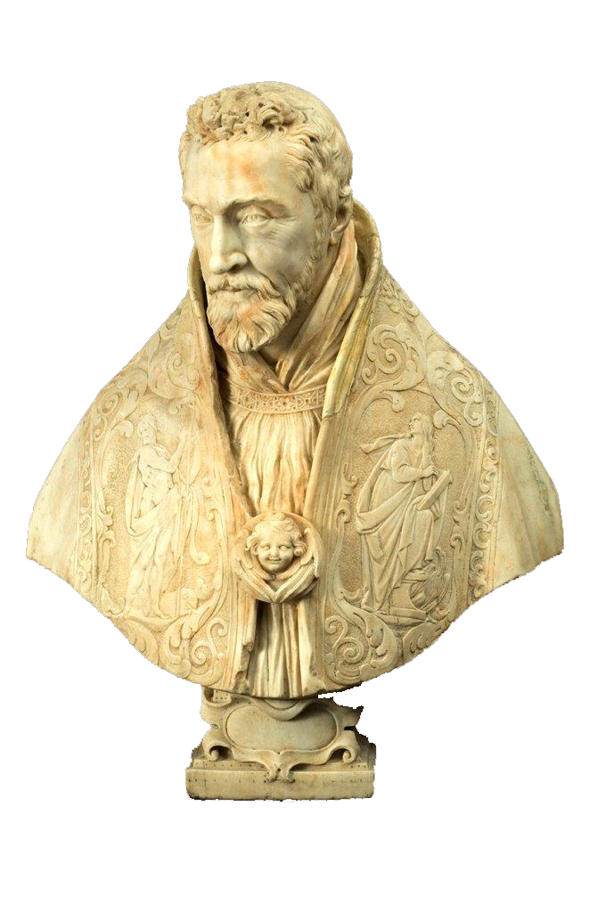
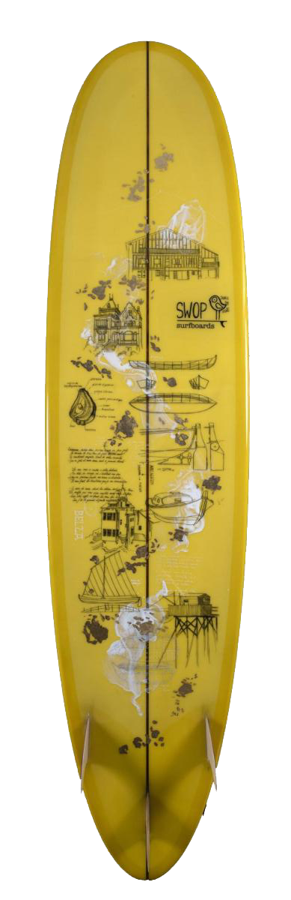

Les salles sur la Préhistoire présentent le passé de l'Aquitaine depuis 500 000 ans. Riches de plusieurs milliers de silex, d'ossements, d'oeuvres d'art sur pierre ou sur os, de bijoux et d'objets en bronze, elles présentent l'évolution des différentes cultures humaines depuis les premières traces de l'homme en Aquitaine jusqu'à l'apparition de la métallurgie. Immergez vous dans la ville, observer l’architecture, revivez l’époque Gallo-Romaine. L'âge de Bronze marque l'apparition de l'agriculture et de l'élevage en Aquitaine, avec le développement de la poterie permettant de stocker la nourriture. Grâce à ce nouveau métal, les outils et les armes, telles les épées ou les lances s'amélioreront significativement. L'âge de Bronze marque l'apparition de l'agriculture et de l'élevage en Aquitaine, avec le développement de la poterie permettant de stocker la nourriture. Grâce à ce nouveau métal, les outils et les armes, telles les épées ou les lances s'amélioreront significativement. Les récentes fouilles à Bordeaux ont mis au jour des poteries, des objets de parure mais aussi des statues en pierre, témoignages exceptionnels sur la société gauloise. L’âge du Fer prend fin avec la Guerre des Gaules menée par César et c’est en Aquitaine qu’eut lieu la dernière bataille, à Uxellodunum (Saint-Denis-les-Martels, Lot) en 51 av. J.-C. Le Musée expose une partie de l’armement des Gaulois retrouvés sur ce site, témoin de la fin de l’indépendance gauloise.
Immergez vous dans la ville, observez l’architecture, revivez l’époque Gallo-romaine. Au sein de notre musée, venez découvrir Burdigala, revivez l’histoire de l’Aquitaine, de Caïus Julius Secundus, à Jupiter.
Les salles présentant l’Antiquité commencent par l’évocation de la ville, de son architecture et de ses décors. Burdigala, Capitale régionale au moins dans la seconde moitié du IIe siècle, a développé une parure ornementale d’une ampleur et d’une richesse exceptionnelles, souvent ostentatoire, perceptible à travers le temple célèbre des Piliers de Tutelle connu par des gravures et des fragments architecturaux monumentaux, ou l’immense mosaïque d’une maison du centre-ville.
Burdigala, Capitale régionale au moins dans la seconde moitié du IIe siècle, a développé une parure ornementale d’une ampleur et d’une richesse exceptionnelles, souvent ostentatoire, perceptible à travers le temple célèbre des Piliers de Tutelle connu par des gravures et des fragments architecturaux monumentaux, ou l’immense mosaïque d’une maison du centre-ville.
Apprenez à connaître la ville de Bordeaux à travers l'histoire d'illustres personnages comme Aliénor d'Aquitaine, ayant eue un rôle politique prédominant dans l'europe médiévale.
Découvrez l'impressionnante rosace de l’ancienne église des Grands Carmes, ainsi que de très beau exemplaires de l'art roman et gothique de Bordeaux.
Nous vous invitons à venir découvrir les principaux chefs-d'oeuvres de ces salles, tel que le cénotaphe de Michel de Montaigne, les monuments funéraires des ducs d'Epernon, ou encore, le buste de François de Sourdis par Le Bernin.
Le premier espace témoigne du rôle de la ville de Bordeaux au XVIIIe siècle en France. La reconstitution muséographique d’une façade bordelaise qui fait office de support esthétique aux vestiges de la statue équestre de Louis XV constitue un hommage aux transformations urbaines entreprises durant cette époque prospère.
Source de cette prospérité, le deuxième espace s’intéresse aux modes et aux enjeux du commerce maritime bordelais, matérialisé par une imposante collection d’objets de navigation et de maquettes de vaisseaux. Si ce commerce se décline notamment par la pratique en droiture, l’accentuation du commerce triangulaire à la fin du siècle, positionne Bordeaux au deuxième rang des ports négriers de France.
Les modalités de la traite des captifs auprès des marchands africains sont ici explicitées, rompant au passage de nombreux préjugés. Les tragédies des autochtones décimés ainsi que les désastres issus des guerres coloniales ne sont pas oubliés.
Cet espace propose de découvrir les relations que la ville a entretenues avec le monde, de 1800 à 1939. A travers une nouvelle muséographie enrichie de vidéos et d’ambiances sonores, des centaines d’œuvres rappellent la richesse du patrimoine bordelais : peintures, sculptures, dessins, objets d’arts et de la vie quotidienne, affiches, films d’époque…
Un espace dédié à la tourmente révolutionnaire assure la transition avec les salles ouvertes en 2009 : « Bordeaux au XVIIIe siècle, le commerce atlantique et l’esclavage ». Bien que très touché au début du siècle par la perte de Saint Domingue et les guerres maritimes de la Révolution et de l’Empire, les relations intercontinentales vont reprendre progressivement.
Ces espaces ouverts récemment invitent à parcourir l’histoire récente de Bordeaux, capitale régionale, et des territoires qui l’entourent, leurs profondes mutations et leurs aspirations jusqu'à l'horizon 2030. Aujourd’hui, la Nouvelle-Aquitaine se caractérise par une attractivité culturelle, des traditions, des activités économiques diversifiées et des atouts environnementaux uniques. Pour compléter ce nouveau parcours, des projections en grand format, des écrans interactifs et des ambiances sonores rythment ce voyage. Bienvenue dans l’histoire contemporaine de Bordeaux et de l’Aquitaine !
